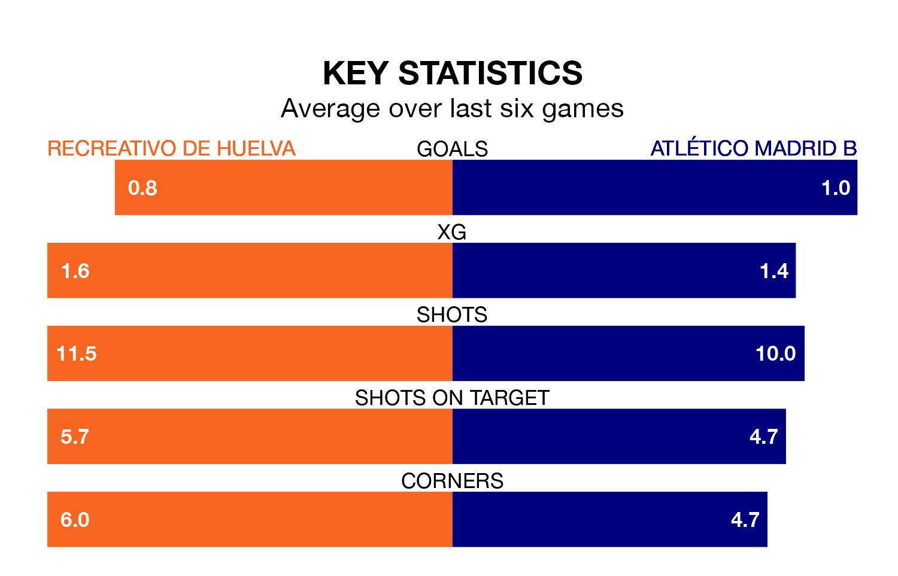

Atlético Madrid B travel to Recreativo de Huelva on late Sunday in Primera Division RFEF Group 2.
The visitors come into the game on the back of a draw in their last match, having tied with CD Alcoyano 1-1 at home, with a goal from Adrián Niño Heredia.
Recreativo de Huelva, meanwhile, lost their last match, 1-0 against Real Murcia.
With Rubén Ramos González between the sticks, Recreativo de Huelva can rely on one of the league's safest pair of hands. He has kept 11 clean sheets in his 22 appearances this season, and no 'keeper has prevented the opposition scoring more often in Primera Division RFEF Group 2.
In Atlético Madrid B's net, Antonio Gomis Alemán has one clean sheet in three games. He has conceded a goal every 34 minutes, three times as often as the 104 minutes between goals for Ramos González.
With 38 goals in 26 games so far this season, the visitors are scoring more than average in the league with 1.5 goals per game. But they are conceding more than average too, letting in 35 goals at a rate of 1.3 per game.
The home side, meanwhile, are below average scorers, with 1.0 goal per game, compared to a league average of 1.1. They have conceded 0.9 goals per game.
Recreativo de Huelva are fifth in the table after 26 games, of which they have won 12 and drawn seven, earning 43 points.
Atlético Madrid B are nine places behind Recreativo de Huelva in 14th, with seven wins and 11 draws putting them on 32 points.
The hosts are in mixed form in Primera Division RFEF Group 2, with two wins and a draw from their last six games.
With a win and four draws over that period, Atlético Madrid B's form is similar – they have both taken seven points from 18.
Updated: 09:34 (UTC), 08/03/24